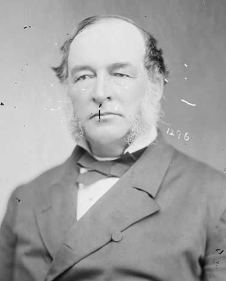
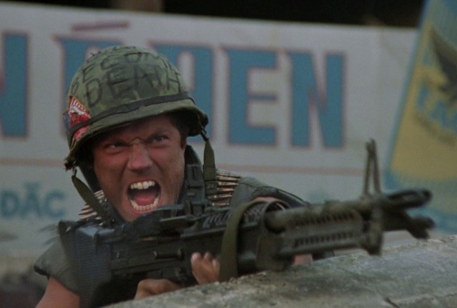
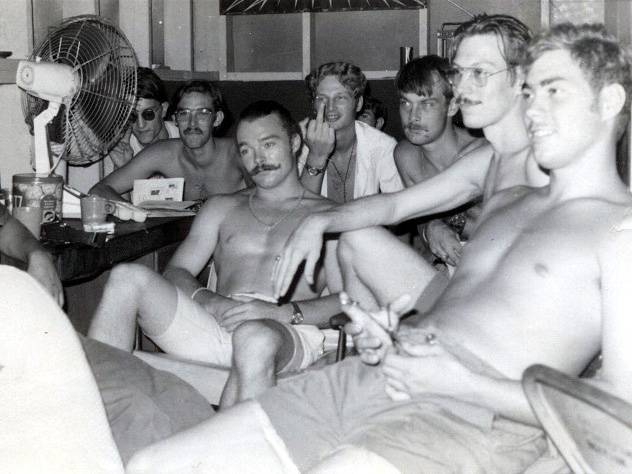
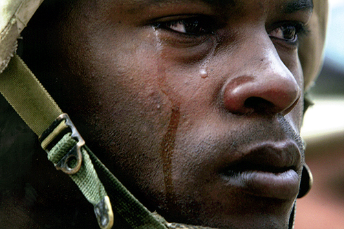
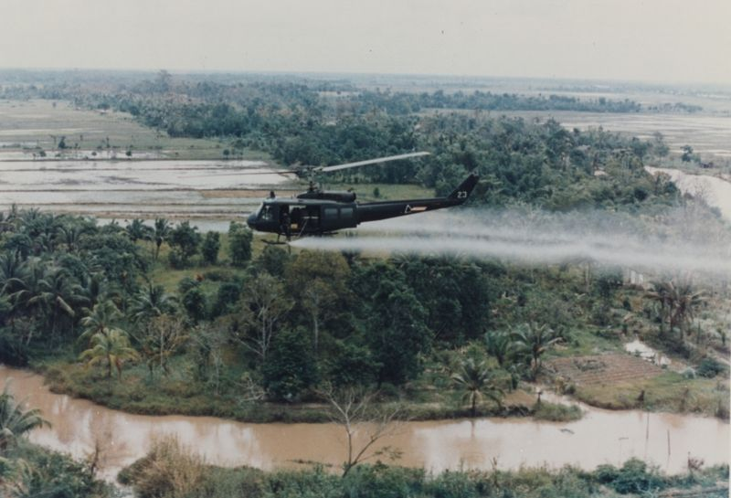
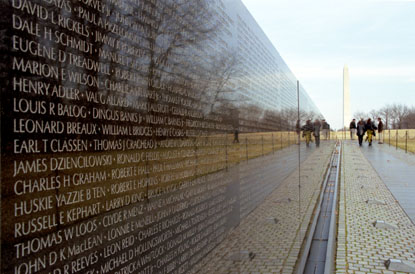

|
From the late 1960s, Americans have been subjected to a
steady stream of books, motion pictures, and newspaper and
magazine articles that have portrayed Vietnam veterans as
unique in American history for having suffered in
substantial numbers from the psychological syndrome now
known as Post-Traumatic Stress Disorder. According to this
view, the Vietnam veteran's problems began in Vietnam where
he was forced to participate in a brutal and disturbing war
in which he was under fire twenty-four hours a day. The
enemy, the wily and tenacious Vietcong and North Vietnamese
regulars, were not always clearly defined nor were they
above using civilians as shields or assassins, leading to
the unintentional--and sometimes intentional--killing by
American forces of noncombatants, including women and
children. Because of the military's policy of limiting the
tour of duty in the war zone to one year, combat groups
lacked cohesion and suffered from low morale, the results of
which included the excessive use of marijuana and heroin and
an eventual breakdown of discipline.
When the Vietnam veteran returned to the United States, he
did not come back slowly on a troop ship with his comrades
(as had been the practice in World War II, allowing time to
unwind, "decompress," and assimilate the experience), but
was flown back quickly by himself, moving from the blood and
gore of the combat zone to his hometown in the space of
twenty-four hours. Once at home again and trying to deal
with the shocking transition, he was either totally ignored
by the civilian population or, worse, spit upon and blamed
for losing the unpopular war. He was given no parade or
|

Until 1877, Dr. Charles Nichols operated an asylum
for Civil War veterans suffering from psychological trauma. It was
an uphill battle, as most Americans of the era dismissed the existence
of such issues, or else believed they only affected the weak and unmanly.
|
welcoming celebrations. These factors were thought to cause
a number of readjustment problems, including high
unemployment, drug addiction, divorce, suicide, crime, ill
health due to exposure to Agent Orange, and lingering
psychological problems that manifested themselves in the
form of flashbacks, nightmares, depression, guilt over
atrocities and dead buddies who did not come back, and
"psychic numbing." The experience of the Vietnam veteran has
been contrasted with that of American veterans from Valley
Forge to World War II, who were supposedly older and more
mature, coped better, derived strength from unit cohesion
throughout the war, fought a clearly defined enemy in
conventional warfare, and, because the United States won the
war, returned home to exuberant parades, offers of jobs,
and, after World War II, a generous G.I. Bill that provided
a wide array of benefits from guaranteed education expenses
to low-interest home mortgages.
The strong impression has thus emerged that earlier American
veterans, including those from the Civil War, may have
developed psychological problems due to exposure to combat
during their war, but that these problems were "washed away"
by the ritual of acceptance and celebration by appreciative
civilians that came in the wake of a successful military
effort by American armed forces. In the one prior major
episode of defeat for Americans in combat--the experience of
Confederate troops in the Civil War--historians have
suggested that the phenomenon of the Lost Cause, which
celebrated and deified the Southern fighting man even in
defeat, served to prevent the development of psychological
and social problems.
The "Troubled" Vietnam Veteran
This view of the Vietnam veteran as troubled and prior
American veterans as well-adjusted first emerged in the
popular media in the late 1960s, acquired additional
definition from 1971 to 1974, and has taken on a life of its
own as the years have passed. By the 1980s, it became common
in the United States to view the Vietnam veteran as beset by
a wide range of problems and betrayed by his fellow citizens
and government. As a result the Vietnam veteran has acquired
an almost mythic stature, that of the "survivor-as-hero,"
who fought under insane conditions in Vietnam and then
rebuilt his life in an ungrateful America; some critics even
see the Vietnam veteran--because he lost the most, because
he did it seemingly for nothing--as the most romanticized
war hero in American history. Through the powerful image of
the Vietnam veteran, the Vietnam experience has shaped,
redefined, or even invented our current view of war, our
concept of military service, our ideas of risk and
citizenship, our view of the American soldier and veteran,
and the very category of Post Traumatic Stress Disorder
itself.
Have Vietnam veteran advocates been correct in arguing that
Vietnam produced unprecedented levels of psychiatric
casualties? Is it true that parades and celebrations can
wash away the disturbing memory of combat? Can there be true
unity and understanding between civilian and soldier (as
Vietnam veterans have contended)? Have the problems of
Vietnam veterans been overstated and, if so, why? Any
examination of these issues must begin with a thorough
consideration of the shaping of the image of the troubled
and scorned Vietnam veteran and how he has come to dominate
and condition our thinking on the matter of the
psychological repercussions of warfare.
Oddly enough, during the height of American participation in
the Vietnam War in the 1960s, most accounts of the Vietnam
veteran returning from the war zone presented him as
readjusting quite well to civilian life. The New York
Times noted in 1968 that returning servicemen were
finding jobs faster than at any time in the past ten years.
Numerous efforts had been made by the Ford Foundation, the
Veterans Administration, the United States Post Office, and
other private and public groups to see that returning vets
received jobs. Some were even worried that the Vietnam
|

Most Vietnam War movies of the 1970s
and 1980s, including 1986's Full Metal Jacket,
portrayed the soldiers who fought the war as deeply
troubled souls.
|
veterans would not utilize the G.I. Bill for education
because jobs were so easy to find. The state of affairs was
such that the New York Times, in an editorial
entitled "Veterans' Lobby Outdoes Itself," protested this
lavish treatment, and noted that military service was an
obligation of citizenship, and that continued efforts to
give the veterans preferential treatment would create a
permanent privileged class of veterans, "a postwar mercenary
class uncongenial to the national heritage."
The print media reported a public reaction in which
strangers on the street would approach the Vietnam vet to
thank him for his service, or, in a restaurant, a stranger
would pick up the check in gratitude. The first American
troops to be withdrawn from Vietnam (in 1969) were greeted
by a parade in Seattle at which the crowd yelled "Thank you!
Thank you!" and "flags waved, ticker tape showered down on
the troopers, and pretty girls pressed red roses into the
men's hands." Comparisons with the veterans of previous
American wars tended to favor the Vietnam veteran who was
described as "knowing exactly what he wants" in contrast to
the veterans of the Korean War who were characterized as
"quiet, apathetic young men who shuffled aimlessly about,"
with a "glassy faraway look ... staring nowhere."
Another view emerged in the late 1960s, however, and it
began with concern over the ability of the Vietnam veteran
to bridge the psychological gulf between war in East Asia
and his return to peaceful vocations in America. Writers
were struck by the stark contrast between a war zone of
napalm, body counts, and killing and the relatively tranquil
domestic scene where civilians were largely ignorant of or
indifferent to the war. On the basis of these shocking and
anomalous images of war, the view of the Vietnam War as
unique emerged, and, accordingly, the Vietnam veteran also
came to be seen as unique. He returned quickly with no
reorientation period and appeared to be jolted to discover
that his society was not deeply committed to the war. As a
result, he experienced a feeling of "strangeness and
helplessness" in encountering the "uncommitted."
Given that most veterans of past wars have experienced some
readjustment problems, including a feeling of alienation
from the civilian population, the Vietnam veteran might not
have seemed unusual in this regard. But by 1971, popular
culture, without any reference to historical context, began
to regard the Vietnam veteran as alone in American history
in allegedly being unappreciated, troubled, rejected, and
blamed for the war. Four factors contributed to this
increasingly prevalent view. First, the domestic opposition
to the war significantly shaped the image of the Vietnam
veteran. Particularly after the Tet Offensive of early 1968
and the revelation of the My Lai Massacre of 1969, the
Vietnam veteran came to symbolize everything that was wrong
with the war. On the one hand, he seemed to be an instrument
of mass destruction; on the other hand, he appeared to be a
victim himself, perverted by this strange war. The idea that
American soldiers could commit atrocities shocked and
disappointed the American public, which began to oppose the
war in increasing numbers. By pointing to its veterans as
corrupted, tarnished, and ruined innocents, critics could
condemn the war, demand full American withdrawal, and pursue
a related agenda of reform, which included (after
disengagement from Vietnam) an attempt to change military
and foreign policy, achieve greater access to health care,
and secure equal rights at home.
Second, the massive demobilization from 1970 to 1972 created
a short-term crisis and the perception of serious and
continuing problems. With the withdrawal of American forces
from Vietnam, approximately one million soldiers were
released from military service in 1970; this coincided with
President Nixon's effort to "cool down" the economy. As a
result, unemployment increased at the exact time that the
greatest number of new veterans were entering the job
market. As opposed to earlier fears that few Vietnam
veterans would use the G.I. Bill because they were being
actively pursued by employers, the concern suddenly shifted
to a disproportionately high unemployment rate for these
veterans. Business Week concluded: "Back home, [the
Vietnam veteran] is primarily a job problem." Numerous
magazine and newspaper articles trumpeted the fact that 12.4
percent of Vietnam vets between twenty and twenty-four were
unemployed, compared with a national unemployment rate of 6
percent. Television news programs highlighted the protests
of jobless, disgruntled Vietnam veterans. By 1973 returning
vets had been reabsorbed into the economy and their
unemployment rate was essentially the same as that for the
general civilian population, but the indelible impression
had been created that Vietnam veterans were unemployed or
even unemployable. Articles in the late 1970s cited
fantastic (and incorrect) unemployment rates of 39 percent
for Vietnam vets, and print media coverage in the 1980s
continued to claim serious unemployment problems for these
veterans, characterizing such difficulties as "common."
Television news also continued well into the 1980s to
portray the Vietnam veteran as suffering from persistent
unemployment.
Third, there had been a "heroin epidemic" in Vietnam from
1970 to 1972, in which somewhere between 25 percent and 50
percent of the American forces used heroin. Particularly in
the television news, drug problems of soldiers in Vietnam
and returning Vietnam veterans received a great deal of
attention. At the outset, in 1969, television news did not
view drug abuse as a problem exclusive to Vietnam, but,
after it was revealed that the American soldiers involved in
the My Lai Massacre had smoked marijuana the night before,
the issue came to be viewed in a different light. Walter
Cronkite reported on November 13, 1970, that the army's
marijuana problem in Vietnam was soaring and, eleven days
later, that Vietnam veterans were bringing heroin into the
United States. Television reports eventually described the
drug problem in the military as an "epidemic" and "out of
hand," and by March of 1972 the Vietnam veteran himself was
|

A group of Vietnam soldiers in a
heroin addiction treatment facility.
|
seen as importing his habit back to the United States. On
March 2, 1972, David Brinkley attributed a number of
problems, including Vietnam drug usage and the alienation of
young Americans, to the Vietnam War, which he called the
biggest blunder in U.S. history. Although studies showed
that returned vets were not primarily using heroin, that
their usage of drugs was similar to that of civilians, and
that their drug use had dropped to pre-Vietnam rates or
lower, the "drug addict" component of the "troubled Vietnam
veteran" became embedded in the national conscience.
Fourth, with the return of the Vietnam POWs in 1973 to
parades and national celebration, the myth-making process
was complete. Vietnam vets were described as the "Forgotten
Veterans" who, despite their sacrifices in Vietnam, had
never received "their parade" or any recognition or
appreciation from their society. Media reports of the early
1970s commonly described Vietnam veterans as the newest
"minority." Mere teenagers, they had been forced by their
government to fight in an unpopular war where they had
committed atrocities, and came home psychologically
disturbed and addicted to drugs, facing future unemployment
and neglect. Articles such as "Will Somebody Please Welcome
This Hero Home?," "The Vietnam Vet: 'No One Gives a Damn,'"
and "Vietnam Veterans: A Shocking Report on Their Damaged
Lives" became typical. Vietnam veterans were called
"unheralded, even unwanted," and "the most alienated
generation of trained killers in American history."
In response to the perceived crisis of the Vietnam veteran
in the early 1970s, the military developed drug screening
and treatment programs, Congress raised the level of G.I.
Bill benefits, the head of the Veterans Administration (VA),
Donald Johnson (who was supposedly responsible for red tape
and delays), was sacked, and efforts were made to "welcome
home" the Vietnam veteran. President Nixon proclaimed a
"Vietnam Veterans Day" on March 29, 1974. President Ford's
Veterans Day speech in 1974 centered on the Vietnam veteran,
whom he described as the "forgotten hero." Veteran
unemployment, which had stood at 4.5 percent in 1969 and
increased to 11 percent in 1971, returned to 4.4 percent in
1973. Subsequent studies have demonstrated again and again
that American veterans have higher median income levels than
their civilian peers, and some researchers argue that men
who have been in the military acquire skills and motivation
(a "premium") which serve them well in civilian employment
after discharge from the military. The most thorough study
of Vietnam veterans, Legacies of Vietnam: Comparative
Adjustment of Veterans and Their Peers, demonstrated
that as of 1977 these veterans had a higher median income
than their civilian peers, and that the unemployment rate
was similar for veteran and nonveteran groups. By 1977 over
64 percent of Vietnam vets had used the G.I. Bill (compared
with 55 percent by World War II veterans and 43.4 percent by
Korean War veterans) and a greater percentage of these
Vietnam veterans used the G.I. Bill to pursue higher
education than ever before (60 percent, compared with 51
percent of Korean veterans utilizing the bill and 30 percent
of World War II veterans). By 1976 the source of the largest
amount of federal aid for the nation's college students was
not the Office of Education but the Veterans Administration.
Because the major problems of the Vietnam veteran had
apparently been solved, he was the subject of few articles
or programs in the print or television media in 1975 and
1976. President Ford declared an end to the Vietnam era and
developed programs of clemency and amnesty for Vietnam-era
draft-dodgers and deserters. In 1977, however, the Vietnam
veteran suddenly became a focus of renewed interest.
Newspapers and magazines again routinely described the
treatment of the Vietnam veteran as a "national disgrace,"
and accounts of this neglect varied from poetic descriptions
of men who had battled grimly in leech-infested rice paddies
(despite the fact that only about 15 percent of soldiers in
Vietnam had been assigned to combat) and were now unwanted
like volunteer corn in a soybean field, to the vitriolic
"veteran testimonial," with angry tales of abuse and
rejection. These testimonials excoriated America for not
"coming to terms" with Vietnam. From this point forward, the
predominant theme of the Vietnam veterans' movement was that
the United States would have to come to terms with and
welcome home its Vietnam veterans before there could be
reconciliation and healing concerning what had been a most
divisive war.
Post-Traumatic Stress Disorder
This reemergence and amplification of the idea of the
Vietnam veteran as a scorned and troubled person focused
less on concrete problems of unemployment or supposedly
inadequate levels of funding for the G.I. Bill than on three
new issues: "delayed stress syndrome" (later to become
Post-Traumatic Stress Disorder); Agent Orange; and a
supposedly high rate of suicide in Vietnam veterans. Common
to all three concerns was an inability to quantify the
magnitude of the problem, but with a steady barrage of media
stories and recriminations from Vietnam vets, the impression
emerged that Vietnam veterans were in a crisis and that the
government was largely to blame, both for sending them to
Vietnam to start with and for ignoring them upon their
|

During the Vietnam War, physicians
and psychiatrists struggled to understand the extreme
emotional response of some soldiers.
|
return. In addition, as had been the case with the 1973
repatriation of the American POWs from Indochina, the return
of the Iranian hostages to national exultation in 1981
strengthened the perception that Vietnam veterans were being
neglected. The New Republic noted that year: "Few topics
have received as much anguished attention lately as our
national inattention toward Vietnam veterans."
PTSD had its genesis in the "post-Vietnam syndrome" of the
late 1960s and early 1970s, when observers noted that some
veterans seemed nervous, irritable, and jumpy, suffered from
insomnia, had a "short fuse," and felt guilty over surviving
the war when comrades had been killed. During the 1970s,
accounts of a variety of crimes committed by Vietnam vets
kept the issue of possible psychological damage to these
veterans alive. Headlines such as "Vietnam Veteran Releases
Hostages and Gives Up in Ohio After 9 Hours," "Vietnam Vets
Seize Statue of Liberty," or "Vietnam Veteran Held in Boston
After Firing on Imaginary Enemy" became standard fare in
American newspapers. Murder, kidnapping, and the illegal use
of weapons were frequently the crimes involved, and many
incidents had political content. Examples ranged from a
sit-in at the local VA hospital to the sensational case of
James Hopkins, who crashed his Jeep through the doors of a
VA hospital and fired nine rounds. The image of the veteran
as disoriented, neglected, and a victim of war's madness was
reinforced by motion pictures such as Apocalypse Now
and Taxi Driver, which portrayed the Vietnam War as
surreal, grotesque, and absurd and the Vietnam veteran as
psychotic and ready to commit mayhem at the drop of a hat;
these themes also appeared in the book Dispatches,
which attempted to show the utter senselessness of the
Vietnam conflict. The typical Vietnam vets in the public
mind in the 1970s were the ultimate victims and survivors of
war, the paraplegics and the POWs, and, indeed, paraplegic
veterans such as Ron Kovic and Robert Muller became leading
spokesmen for the cause of Vietnam veterans in the 1970s and
1980s. Tom Wicker referred to the psychological problems of
Vietnam vets as the "Vietnam Disease."
In the late 1970s the American Psychiatric Association
officially recognized PTSD as a psychological disorder, and
this syndrome became the centerpiece of descriptions of the
problems of Vietnam veterans; estimates of its incidence
among Vietnam veterans soared. The psychologist John P.
Wilson, frequently quoted on the subject, estimated that as
many as 500,000 Vietnam vets were victims of PTSD, and Dr.
Cherry Cedarleaf's estimate of an incidence of 50 percent
(1,500,000 Vietnam veterans) was also cited. Most articles
concluded that between 700,000 and 800,000 Vietnam vets
suffered from PTSD, although only 94,630 had been deemed
disabled for psychiatric or neurological reasons by the
Veterans Administration as of 1978. (As of 1946, 454,699
World War II veterans were receiving disability benefits for
neuropsychiatric diseases, constituting an overall rate
similar to that for Vietnam veterans.) Although PTSD's exact
incidence has remained a topic of great uncertainty--recent
studies have placed the current incidence in Vietnam
veterans in a range from a low of 2 percent to a high of 15
percent--PTSD has formed a perfect bridge between the horror
of combat in Vietnam and the supposedly widespread
readjustment problems of its veterans. Nor was the concept
of PTSD in 1970s America limited to Vietnam veterans. The
fascination with Post-Traumatic Stress Disorder and guilt
over the war reached the point in the early 1980s where
several magazine articles described the traumatic
aftereffects for those who dodged the draft and felt that
they had missed an important rite de passage in not
participating in the war; readers were reminded that women
veterans, too, suffered from PTSD. As PTSD seemed to become
the "disorder du jour," the possibility was raised that
practically the entire population of the United States was
suffering from some sort of PTSD or associated guilt
syndrome related to the Vietnam War.
Vietnam veteran advocates in the 1970s frequently presented
PTSD as not just a psychological condition along the lines
of shell shock, that is to say a condition which one could
find in earlier American veterans. Rather, PTSD was
presented as something unique to the circumstances of
Vietnam and the Vietnam vet, and hence something that
required special treatment. Therefore, the politics of
PTSD--the issue of whether it should be recognized as a new
category of mental illness, and whether the VA system was
capable of dealing with the special needs of the Vietnam
veteran pertaining to this psychological syndrome--became
particularly heated in the early 1980s and in part revolved
around the issue of storefront "vet centers," informal
counseling centers established to deal with psychologically
disturbed Vietnam vets who distrusted the VA and would not
seek conventional psychiatric treatment at VA facilities.
Approximately 90 centers were opened in 1980, and 250,000
veterans had been counseled by 1984. The original program
was to expire on September 30, 1981, but was extended and
even expanded to 189 centers. Attempts by the Reagan
administration to close the centers (with the intent of
funneling these patients into the regular VA hospital
system) were characterized as "another betrayal,"
"disgraceful," and "devastating," and provided further
evidence of the Vietnam veteran as neglected and
persecuted--despite the fact, of course, that many vets had
already taken full advantage of the panoply of veterans'
benefits under the G.I. Bill (funds for education and
vocational training, low-interest home mortgages, veterans'
preferences in federal employment, health care through the
VA system).
Agent Orange
The second new issue which emerged in the late 1970s
concerned Agent Orange, a herbicide containing dioxin which,
in the so-called Operation Ranch Hand, was sprayed from
airplanes as a defoliant to clear extensive areas of jungle
in Vietnam to prevent the enemy from concealing his
operations. Agent Orange (so named for the orange bands
around each drum of chemicals) was a 50-50 combination of
two artificial plant hormones, 2,4-D and 2,4,5-T, and an
unintentional byproduct in the manufacture of 2,4,5-T is
dioxin, often known as TCDD, an acutely toxic and potent
carcinogen. In 1978 a twenty-eight-year-old Connecticut
Vietnam veteran named Paul Reutershan died of cancer, and
before his death he suspected that his terminal disease had
been caused by his earlier exposure to Agent Orange during
the war. This led to the formation of the Vietnam Veterans
Agent Orange Victims Inc., a group which began collecting an
ever-lengthening list of veterans with a broad spectrum of
medical problems. As anecdotal evidence accumulated, Vietnam
veterans claimed that their exposure to Agent Orange in the
war zone was causing high rates of cancer in the veterans
themselves and birth defects in their children. Accordingly,
Vietnam veterans filed a class action suit against the
United States government in addition to the seven chemical
companies which had manufactured Agent Orange; the case
resulted in a judgment of $180 million against the chemical
companies. An additional Agent Orange issue has concerned
whether the U.S. government through the VA service-based
disabilities program should compensate Vietnam veterans
suffering from several forms of cancer (especially
|

The U.S. Army used Agent Orange extensively
and rather cavalierly during the Vietnam War without a full
understanding of its devastating effects on soldiers and civilians.
|
non-Hodgkins lymphoma and soft-tissue sarcomas, in addition
to chloracne, a severe skin condition), which Vietnam
veteran advocates argued were caused by Agent Orange
exposure.
Over the years, the Agent Orange issue has been a source of
extraordinary acrimony and continuing uncertainty; the more
dramatic media coverage has claimed that the United States
government "poisoned its own army in Vietnam," and the
rhetoric of the issue routinely has included allegations of
a government cover-up in which key scientific data was
supposedly "rigged," "suppressed," or "sabotaged." Rhetoric
to the effect that Vietnam veterans were being "stalked by
an enemy more insidious than the Vietcong" became typical,
and the title of one account is revealing: "Agent Orange
Furor Continues to Build: For Vietnam Veterans, the
Herbicide Has Become a Symbol for Everything That Was Wrong
About the War."
However, contrary to the sensational and dramatic rhetoric,
government studies by the Centers for Disease Control have
consistently demonstrated that Vietnam veterans and their
children are not at risk for elevated rates of birth
defects, and that added risk of cancer in this population is
nonexistent or slight (only 3,800 of 3 million Vietnam vets
were affected by the extension of service-related benefits
based on the presumption that non-Hodgkins lymphoma,
soft-tissue sarcoma, and chloracne resulted from Agent
Orange exposure), but Vietnam veteran advocates have not
accepted these conclusions. There has even been complete
disagreement on whether the issue of Agent Orange exposure
in Vietnam veterans can be effectively studied: the CDC
concluded that military records did not offer specific
enough information to assess individualized risk for every
Vietnam veteran. This conclusion has been attacked in an
alternative study funded by the American Legion, which
maintained that on the basis of retrospective self-reporting
by Vietnam veterans themselves (that is, their recollection
of exactly where they were in Vietnam at specific times
twenty years ago), investigators could pinpoint the location
of each American soldier during the war so as to assess
exact Agent Orange exposure, and proceed with
epidemiological studies on that basis. After almost twenty
years, the anger and recriminations continue, and in popular
culture, the idea of the Vietnam veteran as suffering from
mysterious skin ailments in addition to cancer as a result
of Agent Orange exposure has taken firm hold. In the motion
picture In Country, for instance, a Vietnam veteran
has strange rashes on his body--seemingly attributable to
Agent Orange exposure.
The Suicide Question
One of the most sensational aspects of the reenergized image
of the troubled Vietnam veteran of the late 1970s and early
1980s, and an issue closely tied to PTSD, has been the
question of suicide and the Vietnam vet. This issue first
emerged in 1980 as newspapers reported under headlines such
as "Horror Festers in Viet Nam Veterans" that of the
approximately 3 million Vietnam veterans, more (60,000 or
even as many as 100,000) had committed suicide after the war
than had died in Vietnam during the war itself (58,000).
Assertions of this rather astonishing suicide rate (at least
6.6 times the rate for a comparable civilian-peer group)
were used to bolster a number of contentions concerning the
Vietnam veteran: that unique circumstances in Vietnam
(guerrilla warfare, constant exposure to danger, the
widespread commission of atrocities, lack of unit cohesion)
produced a high rate of Post-Traumatic Stress Disorder; that
these problems only became worse (or frequently first
manifested themselves) after the end of the war since
soldiers were repatriated quickly without counseling; that
civilians in the United States further aggravated these
psychological problems by either ignoring or reviling
(rather than welcoming home) Vietnam veterans; and that as a
result of all this Vietnam veterans, desperate and
abandoned, were committing suicide in unprecedented numbers,
and were, to say the least, in a continuing crisis.
In response to this perceived emergency, researchers
conducted a number of careful studies and concluded that
either there was no difference between the suicide rates in
Vietnam veterans and their civilian peers, or that, if there
was a difference, it was slight (less than 25 percent
higher) and was part of a generally increased risk of
mortality during the first five years following the return
from Vietnam, after which suicide rates for Vietnam vets and
the comparable civilian population were essentially
identical. Daniel A. Pollock of the Centers for Disease
Control concluded in 1990 that fewer than 9,000 Vietnam
veterans had committed suicide through the early 1980s, and
that the suicide rate for this veteran population was
similar to that for civilians. In spite of this meticulous
research, however, one notices again and again in media
reporting from the 1980s and 1990s assertions such as the
statement of one Vietnam veteran advocate that 159,000
Vietnam vets had committed suicide since the end of the war,
Tom Wicker's claim (later retracted) of 500,000 suicide
attempts by Vietnam vets, or repeated anecdotal reports of
Vietnam veterans committing suicide--in one case at the
Vietnam Veterans Memorial in Washington, D.C.
Upon investigation these inflated numbers have been revealed
to be entirely without merit. When Tom Wicker reported that
500,000 Vietnam vets had attempted suicide, for example, it
turned out that he had obtained the statistic from an
article in Penthouse Magazine, which was relying on a
pamphlet issued by "Twice Born Men," a veterans' group in
San Francisco, defunct by 1975. That organization's former
director, Jack McCloskey, said he got the figure from the
National Council of the Churches, but the council disavowed
any knowledge of the statistic. This idea that as many (or
even twice as many) Vietnam veterans committed suicide after
the war as died in the war zone during the war itself
appears to be a rumor that turned into a myth that has
become legend and now is being quoted as the truth. Despite
the careful research by CDC scientists, the impression
lingers that suicide remains a major problem for Vietnam
veterans, and that these men are unique in the history of
American veterans for this persistent and serious problem.
In addition, various newspapers and magazines in the late
1970s and early 1980s reported that as many as 125,000
Vietnam veterans were in jail, and that "one third of the
Federal prison population is made up of vets," the
implication being that a disproportionate number of veterans
were in jail as a result of readjustment and PTSD problems
that had forced them to commit criminal acts: "There is a
pretty strong belief out there that a lot of these men were
incarcerated because they were in Vietnam--because of
problems they had 'in country.'" Television has also
presented the matter of the incarcerated Vietnam veteran,
sometimes in very dramatic fashion, implying that even
veterans convicted of armed robbery or rape were acting out
as a result of their war experience, or that the involvement
of these men with crime was a circuitous way of attempting
suicide, in that they expected to be shot and killed by
armed clerks or by police officers who caught them in the
act.
Memorializing the Vietnam Veteran
Because the perceived crisis of the Vietnam veteran centered
on the assertion that he had either been actively reviled or
had never been properly welcomed home, and that this neglect
and abuse had led to substantial psychological problems,
something of a national obsession to "welcome home" the
Vietnam vet developed in the late 1970s. This manifested
itself primarily in various declarations, lavish parades for
the Vietnam veterans, and the construction of the monument
|

The Vietnam War memorial
has received almost universal praise for its thoughtful
handling of a difficult subject.
|
to the Vietnam war dead in Washington, D.C. President Carter
followed the example of Presidents Nixon and Ford of
honoring the Vietnam vets by declaring a Vietnam Veterans
Week to coincide with Memorial Day in 1979. In addition,
Veterans' Day on November 11, 1979, was dedicated to the
Vietnam veterans, and Congress declared April 26, 1981, to
be "Vietnam Veteran Recognition Day."
On May 7, 1985, 25,000 Vietnam veterans marched in a New
York City ticker-tape parade attended by one million people,
many of whom held signs saying: "You're Our Heroes, Vietnam
Vets," On June 13, 1986, 200,000 veterans in Chicago
participated in a "Welcome Home, Vietnam Veterans" parade,
at which General Westmoreland served as parade marshal and
Playboy bunnies, clad in military costumes, walked with the
vets. General Westmoreland led another group of 200,000 in a
parade in Houston on May 23, 1987, where parade-goers waved
American flags, yelled "Thanks," and held "Welcome Home,
Vietnam Vets" signs despite the fact that the last veteran
had returned fourteen years prior to that date. Smaller
parades and tributes were held in a variety of places,
including Modesto, California; Anderson, Indiana;
Northfield, Vermont; and Kalamazoo, Michigan. With each new
event, some veteran would inevitably be quoted as saying
that the Vietnam veterans had never received such
recognition before and were "finally being welcomed
home."
Another central landmark in the 1980s "Welcome Home, Vietnam
Vets" phenomenon was the Vietnam Memorial constructed in
Washington, D.C. The dedication ceremony in 1982 drew a
crowd of 150,000. On November 10 of that year a four-day
tribute to Vietnam veterans commenced in Washington, D.C.,
during which the names of all 57,939 servicemen who died in
Vietnam were read at the Washington Cathedral. Television
coverage focused on weeping veterans and survivors at the
monument itself, interviews with veterans who still claimed
they had been betrayed and rejected by society, or
interviews with family members who commented that the war
was a waste and that the men (and women) had died for no
good reason. Despite the post-Vietnam emphasis on
"reconciliation," "healing," and "closure," the centrality
of the Vietnam Veterans Memorial in American culture and
consciousness along with the continuing emphasis on loss,
grief, suffering, and persistent pain raised the possibility
that there would never be anything remotely approaching
closure concerning the Vietnam War.
This effort to "welcome home the Vietnam veteran" and to
"come to terms with Vietnam" marked yet another shift in
representations of the Vietnam War and the Vietnam veteran.
In the 1960s and early 1970s, most images of the Vietnam War
had been of domestic protest and Vietnamese pain. The
nightly footage of Vietnamese parents stricken with grief
and children charred by napalm provided striking images, but
the plight of American soldiers in Vietnam was not equally
evident. In the mid-1970s, though, media accounts and motion
pictures such as Heroes, Taxi Driver, Rolling Thunder, and
The Ninth Configuration shifted the emphasis by presenting
Vietnam veterans as battle-scarred, disturbed, and out to
create havoc. The Vietnam veteran was seen as a junkie,
emotional cripple, or ticking time bomb.
In the 1980s, with the rehabilitation of the image of the
military under the Reagan administration, the veteran as
victim of war's madness was transformed into the veteran as
a kind of "survivor-hero," one who endured not only the
madness of war, but the perfidy of his own government that
sent him to fight a meaningless war on terms which
guaranteed defeat. Sylvester Stallone as Rambo, Chuck Norris
in Missing in Action, and Tom Selleck as Magnum, P.I.,
revealed the Vietnam veteran as a "hunk" and a hero, a
"cannier, sharper, braver guy" than before he went to
Vietnam; while still a type of a victim, the Vietnam vet was
transformed from a villain into a real-life "stud."
Motion pictures such as Platoon, Full Metal Jacket, and
Hamburger Hill, however, continued to depict the madness,
violence, and pointlessness of the Vietnam War. Despite the
goal of "promoting national healing," much of the continued
focus on Vietnam perpetuated earlier stereotypes.
After the upheavals of the 1980s--both the blistering
recriminations made by Vietnam veterans and the extensive
and effusive efforts made by individuals, cities, and the
U.S. government to make amends for perceived earlier
neglect--one might think that the issue of the troubled and
scorned Vietnam veteran would have been laid to rest, but
this has not proved to be the case. The image of the Vietnam
veteran as a spurned, neglected, and troubled individual has
refused to die; it is a concept that has proved to be highly
resilient and that has continued to manifest itself in a
number of forms throughout the 1990s. Three factors account
for this phenomenon: a refusal of the media to cease and
desist; a new emphasis on the psychological problems of
women veterans, which has restated many of the problems of
male veterans first discussed in the 1970s; and the close
association of the Vietnam veteran with the concept of PTSD,
which has become a widely utilized psychiatric diagnosis for
a variety of psychological ills in post-Vietnam America.
First, despite the parades, adulation, and the Vietnam
Veterans Memorial, media stories have continued to present
the Vietnam veteran as suffering from significant social and
psychological problems--the genesis and continued existence
of which can be explained by neglect. For instance, a number
of stories into the 1990s have focused on the "bush" or
"tripwire vets," Vietnam veterans who have shunned society
and have chosen to live in the wilds of the Pacific
Northwest or in other isolated, often mountainous regions of
the United States. Some stories have estimated that there
are as many as 35,000 to 45,000 of these veterans, and
indicate that their problems are often attributable to
PTSD. Other stories have presented the dilemma of homeless
Vietnam veterans (this condition is also usually represented
as attributable to PTSD and consequent alcohol and drug
abuse), and estimates of the number of these veterans have
gone as high as 500,000. The homeless, of course, cannot be
counted with any certainty, and widely divergent figures
between one study and another suggest the unsystematic
nature of and political agendas driving such research.
Despite these problems, stories on homeless Vietnam veterans
have tended to characterize their treatment as a "disgrace"
and have denounced the ingratitude of the American people,
while condemning the Veterans Administration for failing to
respond adequately to the situation (despite the extensive
VA program of providing shelters for homeless veterans).
Although a recent CDC study put the figure of Vietnam
veterans suffering from PTSD at 2 percent (about 60,000 men
and women out of approximately 3 million Vietnam veterans),
media reports continue to present estimates of the past and
present incidence of PTSD throughout the Vietnam veteran
population as in excess of 1 million, and as high as 1.5
million; media reports continue to assert that over 100,000
Vietnam veterans have committed suicide.
Second, the image of the Vietnam veteran as abused and
psychologically tormented has been reinforced by the
tendency in the 1990s to focus on female Vietnam veterans as
a separate population, which similarly has never been
welcomed home or appreciated, and which has developed a wide
array of psychological problems as a result of this neglect.
The focus on women vets has tended to repeat all of the
allegations of mistreatment made in the late 1970s, and has
shifted attention away from the issue of whether the
parades, welcomes, and attention of the 1980s actually did
any good for male Vietnam veterans. Approximately 11,000
women served in the armed forces in Vietnam, and although
only 8 died in combat-related incidents, stories on women
vets have focused on the psychological trauma involved in
their exposure to gruesome and upsetting scenes when they
tended to the wounds of the men who were shot up in combat.
Some media presentations have suggested that female Vietnam
veterans were worse off than male veterans in that they were
never treated as returning warriors, but were simply
forgotten.
Finally, in the past ten years, the image of the Vietnam
veteran as a troubled individual has resisted modification
because the Vietnam vet has become the quintessential
"stressed-out" American and a reference point whenever the
subject of PTSD is considered in any context. Almost any
discussion regarding stress and PTSD in contemporary America
will refer to the Vietnam veteran to legitimate and clarify
the matter: witness discussions of pro football players ("in
some cases, players developed post-traumatic stress
disorders comparable to those experienced by some Vietnam
veterans"), farmers in rural Iowa ("mental-health workers
say that psychologically rural Iowa resembles a Vietnam
veteran with post-traumatic stress disorder"), victims of
airplane crashes ("Airborne calamities ... claim a
psychological toll months, years and possibly decades
afterward-in a manner comparable to the post-traumatic
stress syndrome common among Vietnam veterans"), the
homeless ("nearly half of the homeless people ... exhibited
many of the symptoms of post traumatic stress disorder, a
condition most often linked with Vietnam veterans"), those
in the vicinity of oil spills ("it found a high level of
post-traumatic stress, the same diagnosis made of some
Vietnam veterans"), workers exposed to an industrial
accident ("like Vietnam veterans who can't cope with
recurring visions of the war, Phillips employees who saw
their co-workers die are struggling with emotional
troubles"), the problems of traveling salesmen ("they
suffered symptoms of post-traumatic stress disorder--a
condition often associated with Vietnam veterans"), victims
of auto accidents ("motorists involved in fatal accidents
experience what mental-health experts define as
post-traumatic stress syndrome. Most commonly associated
with Vietnam veterans...", incest and rape victims ("when
victims finally find their way into therapy, they are often
diagnosed as having Post Traumatic Stress Syndrome, the same
diagnosis given to Vietnam veterans who suffer debilitating
flashbacks years after coming home from the war"), rescue
personnel ("they must deal with the dead, the mangled, the
bewildered and stunned ... it could lead to post-traumatic
stress disorder, the delayed reaction first widely
identified among Vietnam veterans"), victims of earthquakes
("In disaster research, we're starting to look at such
things as post-traumatic stress disorder, which has been
experienced by Vietnam veterans"), hostages ("like some
Vietnam veterans, hostages are apt to show evidence of what
professionals call Post-Traumatic Stress Disorder"), teenage
drug abusers ("among teen-agers who sought help at Samaritan
Village, the drug-related experiences were so devastating
that 44 percent suffered from post-traumatic stress syndrome
similar to that of Vietnam veterans"), young adults who are
pushed too hard ("A large number of young adults who had the
hothouse style of upbringing are now suffering
post-traumatic stress syndrome like Vietnam veterans"),
children exposed to violence ("the children he interviewed
suffer from the same kind of post-traumatic stress as
Vietnam veterans"), battered women ("[their behavior] is
similar to that demonstrated by Vietnam veterans who suffer
from post-traumatic stress disorder"), and African-Americans
exposed to racial prejudice ("the African-American community
is suffering from post traumatic stress syndrome caused by
years of oppression and insensitive treatment. It is similar
to that diagnosed for Vietnam veterans").
Over the past twenty years, a number of commentators--often
Vietnam veterans themselves--have protested this regnant
image of the Vietnam veteran as a maladapted and permanently
scarred psychiatric victim. One vet condemned all of the
"ludicrous blubbering and psychobabble" about the Vietnam
veteran as a misfit and tormented loser, and pointed out
that the Vietnam vets he knew were proud to have served
their country and didn't whine or complain about life.
Another commented: "[E]nough is enough already. Not stepping
on anyone's toes, but it's kind of gotten out of hand." An
exasperated movie reviewer, on encountering yet one more
motion picture about a psychologically disturbed Vietnam
veteran, titled his column "Another Vietnam Vet Goes
Haywire" and noted: "Just when you thought you'd seen the
last suspense thriller to feature as its chief villain a
deranged Vietnam veteran, along comes 'Fear' ... to keep the
asinine cycle rolling along." A second weary film reviewer,
called upon to review a movie dealing with Vietnam veterans,
concluded: "So familiar has this story become that I have
started to think of it as a brand new film genre--the PTSD
(Post-Traumatic Stress Disorder) genre."
Despite the welcomes of the 1980s, repeated efforts to
respond to Vietnam veteran concerns, and an occasional
skeptical comment or assessment, the Vietnam veteran has
come to be regarded in American society as a psychiatric
victim and as the least-honored and most-abused veteran in
American history. This image emerged from the antiwar
movement of the early 1970s, centered on a temporary crisis
in reintegration into American society during the early
1970s, and then shifted to controversial issues such as
PTSD, suicide, and Agent Orange--issues on which
incontrovertible scientific data is lacking. Advocates of
Vietnam veterans, fueled by anger against the U.S.
government and particularly against the Veterans
Administration, have created and maintained the presumption
of crisis, detriment, and singularity. The stories of Owen
Flaherty and James P. Green, however, suggest that the
conventional wisdom on Vietnam veterans should be
reconsidered.
Source: Eric T. Dean, Jr., Shook over Hell: Post-Traumatic Stress, Vietnam,
and the Civil War (Cambridge, MA: Harvard University Press, 1997), 7-25.
|